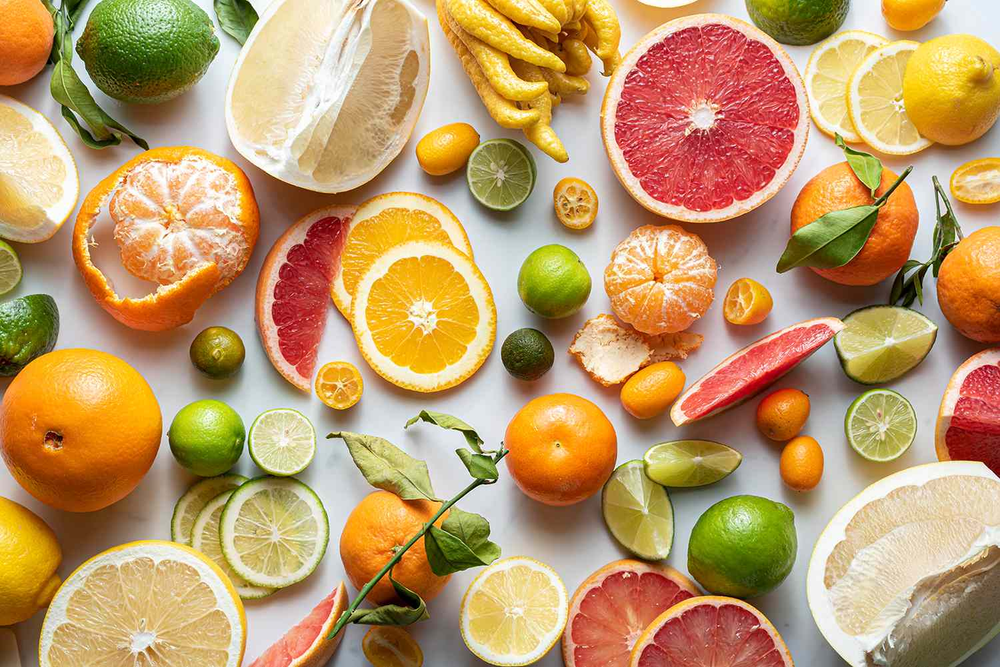
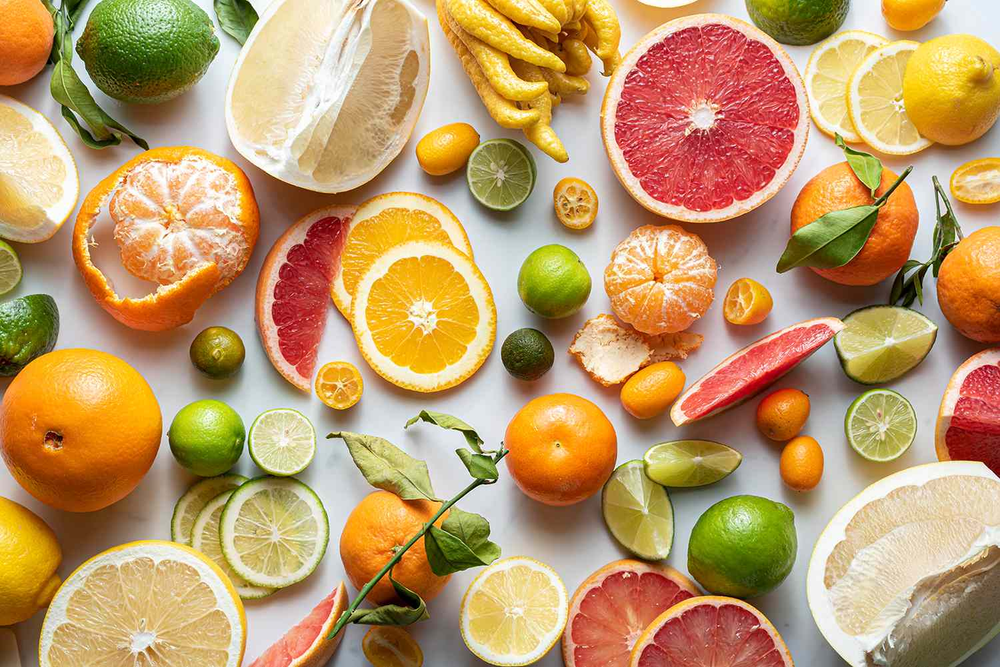

Proteins are very important for our bodies because it allows us to build muscle, supports our immune sytem, improves our bone health, strengthens you, boosts your metabolism, reduces cravings, curbs hunger, manages your weight, and aids your digestive system. Proteins include eggs, fish, chicken, beef, pork, and turkey. Eating protein with each meal is extremely important for many different aspects of health.

Grains are very immportant for us because they provide fiber, vitamins, minerals, and other nutrients to our diets. Grains help to control our cholesteral and weight levels, and help lower the risk of diabetes and other heart conditions. Examples of grains include bread, pasta, oatmeal, healthy breakfast cereals, tortillas, and grits. Make sure to include grains in your diet, because having a healthy heart creates a healthy lifestyle.

I bet your parents have told you since you were little how important fruits and vegetables are. They are important because they are a great source of vitamins and minerals, they provide dietary fibre, and they can help prevent your from heart disease and cancer. Examples of fruits and vegetables include bananas, blueberries, kiwi, avocado, cherries, oranges, apples, apricots, pineapple, cantaloupe, grapefruit, grapes, mangoes, strawberries, blackberries, coconuts, lemons, pears, watermelon, figs, guava, plums, limes, carrots, beets, broccoli, brussel sprouts, cauliflower, asparagus, cabbage, artichoke, celery, green beans, garlic, kale, lettuce, onions, peas, yams, cucumbers, and eggplants. As you can see, there are lots of options for fruits and vegetables, therefore even the pickiest of eaters can certainly find some that they enjoy.
 

Dairy is extremely important for your health because it allows your to build and maintain strong bones. Dairy is also a good source of protein, and contains a wide variety of vitamins and minerals. Dairy also preserves normal growth and brain development. Examples of dairy include milk, butter, cheese, cream, buttermilk, yogurt, ice cream, and cottage cheese.